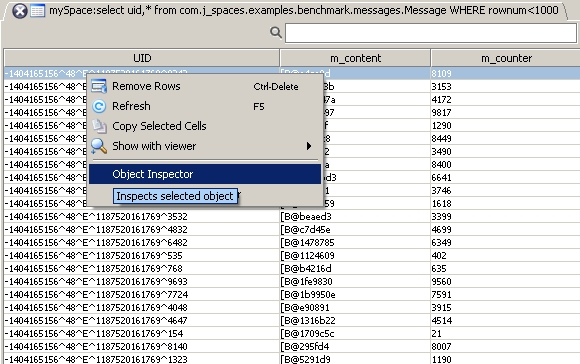
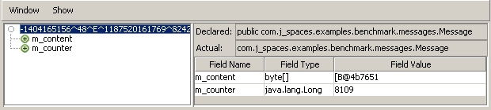
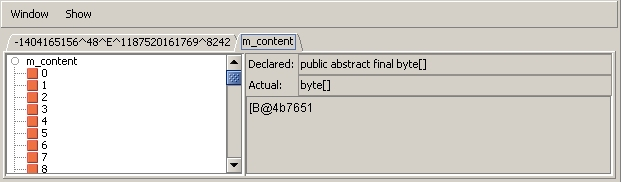
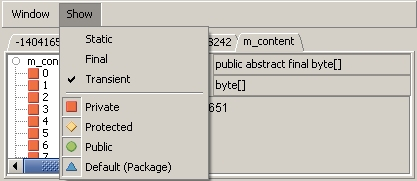

The Object Inspector allows you to view a specific object's information.
Using the selected object's UID, the Object Inspector takes the object itself from the space and displays its class fields, allowing you to drill down into any non-primitive types.
To use the Object Inspector, either right click the object you would like to view (from the list of objects displayed in the Query view or in the Transactions view) and select Object Inspector, or double-click it.

Inside the Object Inspector, when the object node () is selected in the tree on the left, the object's information is shown on the right – its class name and a detailed table of the class fields.

The shapes beneath the object node represent the class fields. The different shapes represent different types of fields – see the Show drop-down menu below. Clicking a field displays its value and class name. You can drill down into any class fields that aren't instances of primitive types, for example, collections, arrays, map, or any other class. Double click a class field in order to drill down into it – a separate tab opens displaying the elements/objects in the array/collection.

The Show drop-down menu allows you to filter the class fields that are displayed in the Object Inspector, according to the selected access level modifiers, or according to the selected class field type (static, final, or transient).

The Object Snapshot Inspector is similar to the Object Inspector, however, the Snapshot Inspector doesn't take the object from the space, but uses a snapshot of the class. Therefore, you can use the Object Snapshot Inspector to inspect objects that were removed from the space. This option doesn't always display all of the class fields (it only displays the fields that are displayed in the Space Browser), nor the class name. You can use the Object Snapshot Inspector by right clicking the class you would like to view, and selecting Object Snapshot Inspector. Drilling down into class fields is still available using this option.